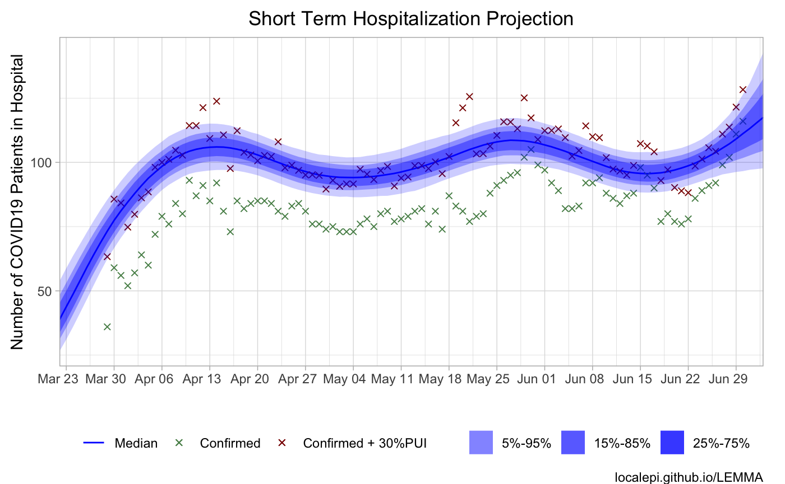

In this Case Studies we show how to use LEMMA to model COVID-19 hospitalizations in Alameda County. In previous versions of LEMMA, fitting Alameda County required substantial user intervention. In the current version, minimal user intervention is required.
Set up an Excel input file Open the template Excel file (the original is
system.file("extdata", "template.xlsx", package = "LEMMA")but the installation instructions on GitHub suggest copying it to example.xlsx in your local directory). In Excel, Save As as “Alameda.xlsx”.Get raw data from chhs.ca.gov
dt <- fread("https://data.chhs.ca.gov/dataset/6882c390-b2d7-4b9a-aefa-2068cee63e47/resource/6cd8d424-dfaa-4bdd-9410-a3d656e1176e/download/covid19data.csv") dt <- dt[`County Name` == "Alameda"]
- Write the data
write.table(dt[, c(2, 5:8, 4)], sep = ",", row.names = F)
#> "Most Recent Date","COVID-19 Positive Patients","Suspected COVID-19 Positive Patients","ICU COVID-19 Positive Patients","ICU COVID-19 Suspected Patients","Total Count Deaths"
#> "4/1/2020",52,76,27,15,8
#> "4/2/2020",57,76,29,17,10
#> "4/3/2020",64,74,32,13,11
#> "4/4/2020",60,95,35,18,12
#> ...Copy and paste the observed data to the Data tab in Alameda.xlsx.
Choose your prior distributions in the Parameters with Distributions sheet. The existing priors are fine for Alameda but they could be adjusted for a different county. For example, in a significantly older population, the hospitalization rate could be higher.
Choose your interventions in the Interventions sheet. Note that if automatic.interventions (on Internal sheet) is true (the default), interventions with mean 1 and sd 0.1 are added whenever there are no interventions for 14 days.
Future changes in public health interventions (for example, relaxing/replacing current Shelter In Place ordinances) can be modelled as a future intervention which multiplies Re by a factor greater than 1. As an example, suppose we want to consider the effect of a third intervention which multiplies Re by 1.4 on July 1. Add the following row:
Intervention Date mean = “7/1/2020” standard deviation = 0
Re Multiplier mean = 1.4, standard deviation = 0
Days to Reach New Re mean = 7, standard deviation = 0
- Run CredibilityIntervalFromExcel
result <- LEMMA::CredibilityIntervalFromExcel("Alameda.xlsx")

- In this case there are several warnings. These can be eliminated by changing max_treedepth to 15 and adapt_delta to 0.99 on the Internals sheet, which increases run time. In this example, the results are not significantly different from those using the defaults, but this is not guaranteed in general. See the FAQ for more details on such warnings.